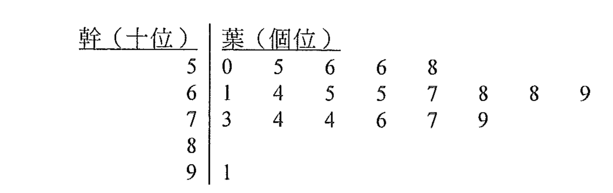

DSE 2012 · 卷二 · 第28題
概率與幹葉圖
題目
下面的幹葉圖顯示一群文娛中心的會員的年歲的分佈。
從該群中隨機選出一名會員。求所選出的會員的年歲不小於 $74$ 的概率。
A
$0.2$
B
$0.3$
C
$0.7$
D
$0.8$

圖（原卷附圖）
題解
第 1 步
從幹葉圖點算總人數
讀幹葉圖
\(\text{stem}\times 10+\text{leaf}\)
幹是十位、葉是個位，每片葉代表一個人。
逐行點算：$5$ 行有 $5$ 片葉、$6$ 行有 $8$ 片、$7$ 行有 $6$ 片、$8$ 行沒有葉、$9$ 行有 $1$ 片。 \[ n=5+8+6+0+1=20. \]
第 2 步
點算年歲不小於 $74$ 的人
不小於的含義
\(\text{age}\ge 74\)
「不小於」包括 $74$ 本身，$74$ 這片葉要計算在內。
$7$ 行中 $74$、$74$、$76$、$77$、$79$ 共 $5$ 人（$73$ 不合）；$9$ 行中 $91$ 共 $1$ 人。 \[ 5+1=6. \]
第 3 步
求概率
\[ P=\frac{6}{20}=0.3. \] 若誤把「大於 $74$」理解為不含 $74$，
只會數到 $4+1=5$ 人，得 $0.25$，不在選項內，可見 $74$ 必須計算。
對照選項，答案為
B
。
答案
B
（$0.3$）
練習
同類新題
題目.
一組按大小排列的數據為：$12,\ 15,\ 15,\ 18,\ 21,\ 23,\ 23,\ 25,\ 28,\ 30$。從該組數據中隨機選出一個，求所選出的數不小於 $25$ 的概率。
A
$0.2$
B
$0.3$
C
$0.5$
D
$0.7$
顯示題解
第 1 步.
數據共 $10$ 個。
第 2 步.
不小於 $25$ 的有 $25$、$28$、$30$ 共 $3$ 個。
第 3 步.
$P=\dfrac{3}{10}=0.3$，答案
B
。
答案：
B
（$0.3$）
‹ 上一題
目錄
下一題 ›